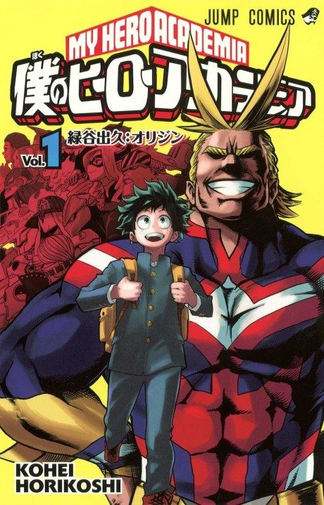

My Hero Academia
僕のヒーローアカデミア
The anime takes the story to Adapted.
7.7AniList score
—Animeter, no votes yet
170episodes, 8 seasons
Key events
These are spoilers. They stay blurred until you reveal them, one at a time or all at once.
Entrance Exam Ep 1–4
- Izuku rushes in to save his bully Bakugo from a villain, impressing All Might.
- All Might passes his Quirk, One For All, on to Izuku.
- Izuku breaks his body saving Ochaco in the U.A. entrance exam and is admitted.
Quirk Apprehension Test and Battle Trial Ep 5–8
- Aizawa threatens to expel the weakest student in a Quirk test.
- Izuku and Bakugo face off in a hero-versus-villain training exercise.
U.S.J. Ep 9–13
- Tomura Shigaraki leads the attack with the bio-engineered Nomu.
- All Might overpowers the Nomu with a barrage of punches despite his time limit.
U.A. Sports Festival Ep 14–25
- Izuku wins the obstacle race using a landmine.
- Izuku pushes Todoroki to use his fire side in their match.
- Bakugo wins the festival but is furious that Todoroki held back.
Vs. Hero Killer Ep 26–33
- Izuku trains with All Might's old teacher Gran Torino.
- Izuku, Todoroki and Iida defeat Stain in a Hosu alley.
- Stain's ideology inspires a wave of new villains.
Final Exams Ep 34–38
- Izuku and Bakugo must work together against All Might.
- Izuku runs into Shigaraki in a shopping mall.
Forest Training Camp Ep 39–45
- Izuku fights Muscular to protect the boy Kota.
- The League kidnaps Bakugo.
Hideout Raid Ep 46–50
- All For One appears and fights All Might at Kamino.
- All Might uses up his last power to win and retires as Symbol of Peace.
- U.A. moves its students into dorms.
Provisional Hero License Exam Ep 51–61
- Izuku develops a kick-based fighting style.
- Bakugo and Todoroki fail the license exam.
- Bakugo and Izuku fight at night, and Bakugo learns the truth about One For All.
Shie Hassaikai Ep 62–78
- Mirio Togata meets Izuku and the frightened Eri.
- Mirio loses his Quirk saving Eri, and Sir Nighteye is killed.
- Izuku uses Eri's rewind power to defeat Overhaul at 100%.
Remedial Course Ep 79–80
- Bakugo and Todoroki have to win over a group of rowdy children.
- Bakugo and Todoroki earn their provisional licenses.
U.A. School Festival Ep 81–86
- Izuku fights the villain Gentle Criminal to protect the festival.
- Eri smiles for the first time at the show.
Pro Hero Ep 87–90
- Endeavor and Hawks fight a powerful high-end Nomu.
- Endeavor's victory starts to change public opinion.
Joint Training Ep 91–100
- Izuku's Quirk erupts into the black-whip power of a past user.
- Izuku learns about the previous holders of One For All.
Endeavor Agency Ep 101–107
- The trio sharpens their Quirk control under Endeavor.
- Hawks feeds information from inside the League to the heroes.
Meta Liberation Army Ep 108–112
- Toga and Twice push through the fight against the Liberation Army.
- Shigaraki awakens his full Decay and takes command of the army.
Paranormal Liberation War Ep 113–131
- Hawks kills Twice.
- Shigaraki gets All For One's power and goes on a rampage.
- Dabi reveals he is Toya Todoroki, Endeavor's son.
Dark Hero Ep 132–138
- Izuku works himself ragged as a lone vigilante.
- Class 1-A confronts Izuku and brings him back to U.A.
Star and Stripe Ep 139–140
- Star and Stripe fights Shigaraki and damages his body before dying.
- Her sacrifice buys the heroes time to prepare for the final battle.
U.A. Traitor Ep 141–143
- Aoyama is revealed as All For One's informant.
- The students use Aoyama to lay a trap.
Final War and Epilogue Ep 144–170
- Bakugo is struck down and revived.
- Izuku fights Shigaraki, and Ochaco reaches Toga.
- Izuku defeats Shigaraki and gives up One For All, while Endeavor and Bakugo bring down All For One.
- The epilogue jumps ahead to Izuku as a teacher.